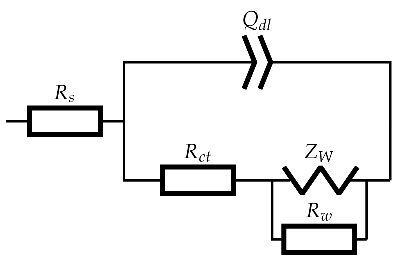

Usage
Working with Impedances in Python
Building complex impedance models is surprisingly simple in Python when you get the hang of it! Here are the key principles:
Note: In our code implementation, we use JAX’s NumPy (jnp) instead of standard NumPy (np) because JAX provides automatic differentiation and just-in-time compilation. These make the computation faster.
Basic Rules
For components in series: Add the impedances (Z)
For components in parallel: Add the admittances (Y = 1/Z)
Example Usage
Let’s understand how to build circuit models, writing them in a natural way while following the format needed for the impedance agent:
# Example: RC parallel circuit in series with resistor
def rc_circuit(p, f):
"""
RC circuit: Rs + (Rct || Cdl)
Written naturally but formatted for impedance agent
Parameters:
p: [Rs, Rct, Cdl] - array of parameters
f: frequencies
"""
w = 2 * jnp.pi * f
Rs, Rct, Cdl = p
# Define circuit elements
Zs = Rs # Series resistance
Zrct = Rct # Charge transfer resistance
Zcdl = 1 / (1j * w * Cdl) # Double layer capacitance
# Combine parallel elements (Rct || Cdl):
Yrct = 1/Zrct # Convert to admittance
Ycdl = 1/Zcdl # Convert to admittance
Ytotal = Yrct + Ycdl # Add admittances in parallel
Zrct_cdl = 1/Ytotal # Convert back to impedance
# Add series resistance
Ztotal = Zs + Zrct_cdl
# Return real and imaginary parts concatenated
return jnp.concatenate([Ztotal.real, Ztotal.imag])
Here’s another example with a Randles circuit including CPE and Warburg elements:
{kind=link}
def randles_circuit(p, f):
"""
Randles circuit with CPE and finite-length Warburg:
Rs + (Qdl || (Rct + W || Rw))
Parameters:
p: [Rs, Q, n, Rct, W, Rw] - array of parameters
f: frequencies
Rs: Series resistance
Q: CPE constant
n: CPE exponent
Rct: Charge transfer resistance
W: Warburg coefficient
Rw: Warburg resistance
"""
w = 2 * jnp.pi * f
Rs, Qdl, n, Rct, Wct, Rw = p
# Define circuit elements
Zs = Rs # Series resistance
Zcpe = 1 / (Qdl * (1j * w)**n) # CPE impedance
Zw = Wct / jnp.sqrt(w) * (1 - 1j) # Warburg impedance
# Combine Warburg with Rw in parallel
Yw = 1/Zw # Warburg admittance
Yrw = 1/Rw # Rw admittance
Yw_total = Yw + Yrw # Parallel combination
Zw_total = 1/Yw_total # Back to impedance
# Add Rct in series with Warburg||Rw
Zrct_w = Rct + Zw_total
# Combine with CPE in parallel
Yrct_w = 1/Zrct_w # Convert to admittance
Ycpe = 1/Zcpe # CPE admittance
Ytotal = Yrct_w + Ycpe # Parallel combination
Ztotal = 1/Ytotal # Back to impedance
# Add series resistance
Z = Zs + Ztotal
# Return real and imaginary parts concatenated
return jnp.concatenate([Z.real, Z.imag])
Common Circuit Elements
# Resistor (R)
Z_R = R
# Capacitor (C)
Z_C = 1 / (1j * w * C)
# Inductor (L)
Z_L = 1j * w * L
# Warburg Element (W)
Z_W = W / np.sqrt(w) * (1 - 1j)
# Constant Phase Element (CPE)
Z_CPE = 1 / (Y0 * (1j * w)**alpha)
Command Line Interface
Basic Analysis
The CLI provides several options for analyzing impedance data:
# Basic analysis with default settings
impedance-agent analyze data.txt
# Analysis with custom ECM model
impedance-agent analyze data.txt --ecm model.yaml
# Analysis with specific LLM provider
impedance-agent analyze data.txt --provider deepseek
# Export results and generate plots
impedance-agent analyze data.txt --output-path results/analysis.json --plot
CLI Options
Arguments:
data_path Path to impedance data file
Options:
--provider TEXT LLM provider (deepseek/openai) [default: deepseek]
--ecm TEXT Path to the equivalent circuit model(ECM) configuration file
--output-path TEXT Path for output files
--output-format TEXT Output format (json/csv/excel) [default: json]
--plot-format TEXT Plot format (png/pdf/svg) [default: png]
--plot Generate plots [default: True]
--show-plots Display plots in window [default: False]
--log-level TEXT Logging level
--debug Enable debug mode
--workers INTEGER Number of worker processes
Python API
Basic Usage
from impedance_agent import ImpedanceAnalysisAgent
# Initialize the agent with specific provider
agent = ImpedanceAnalysisAgent(provider="deepseek")
# Analyze data with built-in model
results = agent.analyze("data.txt", model="randles")
Complete Example
Here’s a complete example demonstrating impedance analysis with synthetic data:
import numpy as np
from impedance_agent.core.models import ImpedanceData
from impedance_agent.agent.analysis import ImpedanceAnalysisAgent
# Create sample data
freq = np.logspace(-2, 5, 50)
z_real = 1 + 2 / (1 + (2 * np.pi * freq * 1e-3) ** 2)
z_imag = -2 * 2 * np.pi * freq * 1e-3 / (1 + (2 * np.pi * freq * 1e-3) ** 2)
data = ImpedanceData(frequency=freq, real=z_real, imaginary=z_imag)
# Define ECM configuration
ecm_config = {
"model_code": """
def impedance_model(p, f):
w = 2 * jnp.pi * f
Rs, Rct, Cdl = p
Z = Rs + Rct / (1 + 1j * w * Cdl * Rct)
return jnp.concatenate([Z.real, Z.imag])
""",
"variables": [
{"name": "Rs", "initialValue": 1.0, "lowerBound": 0, "upperBound": 10},
{"name": "Rct", "initialValue": 2.0, "lowerBound": 0, "upperBound": 10},
{"name": "Cdl", "initialValue": 1e-3, "lowerBound": 0, "upperBound": 1},
],
}
# Run analysis
agent = ImpedanceAnalysisAgent(provider="deepseek")
result = agent.analyze(data, ecm_config)
# Print results
print(result.summary)
if result.time_constant_analysis:
print("\nTime Constant Analysis:")
print(f"Matching score: {result.time_constant_analysis['matching_score']:.2f}")